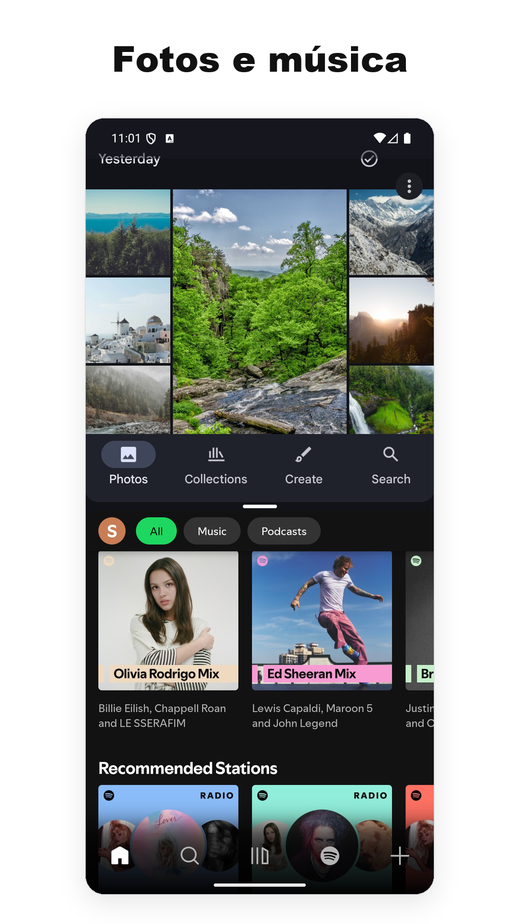
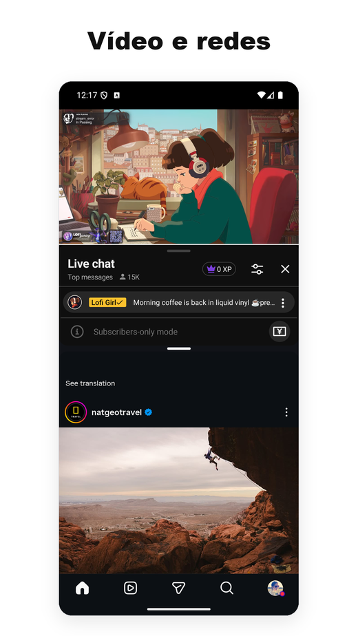
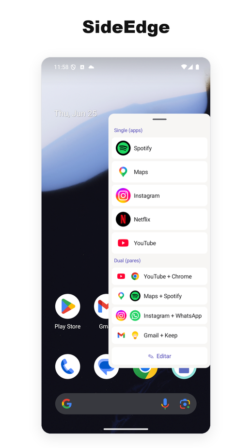
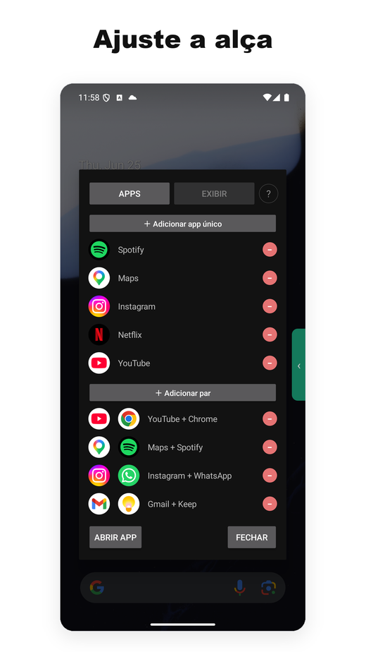

- Um dos poucos utilitários de tela dividida para Android que ainda funcionam de maneira confiável no Android 15, 16 e 17.
- A maior parte dos concorrentes parou de funcionar quando o Google mudou as APIs internas; nós continuamos publicando atualizações em todas as transições recentes do sistema.
- Sem anúncios, sem necessidade de acesso à internet. O núcleo de tela dividida não precisa de Serviço de Acessibilidade no Android 12L+; a barra lateral opcional SideEdge usa um apenas para esconder a aba dela em telas de login/senha. Leve, sem serviços em segundo plano.
- O plano gratuito cobre o uso básico. A assinatura Pro custa cerca de US$ 1/mês — aproximadamente um décimo do concorrente pago mais próximo.
- Nos celulares, o App Pair nativo é, na prática, exclusivo da Samsung — o Android 15 trouxe o recurso no nível do sistema, mas só para dispositivos de tela grande, deixando os celulares Pixel (e qualquer outro celular que não seja Samsung) de fora.
- Se você usa Pixel e sente falta do App Pair do Galaxy, é o substituto mais próximo que já vimos.
- Contexto: por que o "App Pair" importa no Android
- O que o Split Screen Launcher de fato faz
- SideEdge — abra seus pares de qualquer tela
- Uma alternativa ao App Pair da Samsung para o Pixel
- O problema do Android 15/16 — e por que a maioria dos rivais caiu
- Permissões e privacidade
- Comparação com outros apps de tela dividida
- Preço
- Para quem este app é (e quem deve pular)
- Resumo
1. Contexto: por que o "App Pair" importa no Android
O Android suporta multitarefa em tela dividida desde a versão 7.0 (Nougat, 2016). O que ele nunca ofereceu no nível do sistema é salvar combinações de dois apps e abrir os dois juntos. A Samsung adicionou isso à One UI como "App Pair" em 2017, e quem troca um Galaxy por um Pixel percebe quase na hora que o recurso sumiu.
A saída é instalar um lançador de terceiros que automatize o processo de duas etapas: abrir o app A e depois o app B na janela ao lado. O Google Play tem dezenas desses apps — mas o ecossistema é mais bagunçado do que parece, porque cada versão do Android muda como a tela dividida pode ser invocada, e a maior parte dos apps não é atualizada.
O Android 15 (2024) finalmente trouxe um recurso de App Pair nativo no nível do sistema operacional — mas o Google restringiu o suporte a dispositivos de tela grande. O Pixel Tablet recebeu; o Pixel 9 Pro não. Em meados de 2026, esse é o panorama nos celulares:
- Celulares Samsung Galaxy — App Pair nativo desde 2017 (via Edge Panel)
- Celulares Pixel (modelos comuns, sem contar Tablet e Fold) — não tem
- Xiaomi, OnePlus, Oppo, Realme, Vivo, Motorola, Nokia, Sony, ASUS — não tem
Ou seja, nos celulares, o App Pair nativo é, na prática, um recurso exclusivo da Samsung. Todo o resto do mercado depende da tela dividida manual do Android (abrir o app, segurar nos recentes, arrastar, repetir) ou recorre a um lançador de terceiros como o nosso.
Uma alternativa ao App Pair da Samsung para o Pixel e o Android puro
Se você trocou um Galaxy por um Pixel — ou por qualquer celular com Android puro — e está procurando uma alternativa ao App Pair da Samsung, é exatamente essa lacuna que construímos o Split Screen Launcher para preencher. Você tem o mesmo comportamento de "abrir os dois apps lado a lado com um toque", sem precisar de um aparelho Samsung nem do Edge Panel.
É também uma das poucas opções que continua sendo um app de tela dividida que funciona no Android 15, 16 e 17 — sem anúncios, sem SDKs de rastreamento e sem permissão de Acessibilidade para o núcleo de tela dividida no Android 12L e posteriores (a barra lateral opcional SideEdge é a única exceção). A maioria das ferramentas de pares de apps mais antigas se apoia em atalhos do sistema que as versões recentes do Android fecharam (explicamos o porquê na seção 3, mais abaixo); esta chega à tela dividida por um caminho que mantivemos funcionando a cada atualização do sistema.
2. O que o Split Screen Launcher de fato faz
O Split Screen Launcher é um utilitário de propósito único. Você escolhe dois apps, dá um nome ao par ("Deslocamento", "Trabalho", "YouTube + Instagram") e o par aparece como uma linha dentro do app. Tocar na linha abre os dois lado a lado.


Esse é praticamente o conjunto todo de recursos. Sem navegador embutido, sem widget flutuante, sem integração com a gaveta de notificações. O app é leve — alguns megabytes — e não executa nada em segundo plano.
Pares que usamos durante os testes:
- Google Maps + Spotify — dirigindo
- YouTube + Instagram — segunda tela
- Chrome + Google Keep — pesquisa com anotações
- Gmail + Slack — triagem de trabalho
- Calculadora + Chrome — comparando preços em várias abas
Um caso de uso que não imaginávamos: o carro. Um usuário nos contou que roda o Split Screen Launcher na central multimídia Android com IA do veículo dele, pareando Maps + Spotify para navegação com música — e trocando para Maps + Netflix para quem está no banco do carona. Como abrir um par é um único toque, isso combina muito melhor com a central do carro do que ficar segurando os botões pelo menu de recentes.
Acione seus pares automaticamente — MacroDroid, Automate, Tasker
Outro caso de uso que não planejávamos chegou de um canto completamente diferente: uma moto. Um motociclista que usa o app num tablet fixado no guidão queria que a automação do MacroDroid abrisse um par salvo por conta própria — um macro disparado pela ignição que abre a tela dividida sem nenhum toque durante o trajeto. Esse pedido virou funcionalidade. A partir da versão 3.0.4, o MacroDroid consegue abrir um par salvo pelo seletor de atalhos padrão do Android, de modo que o macro dispara a tela dividida da mesma forma que dispara qualquer outra ação. Não testamos individualmente outras ferramentas de automação como Tasker ou Automate, mas como esse recurso usa o seletor padrão do Android e não nada exclusivo do app, elas devem funcionar da mesma forma. É um recurso Pro, estritamente limitado a abrir seus pares já salvos. Se você não usa ferramentas de automação, isso não vai fazer diferença — mas para o segmento de usuários que precisa de mãos livres na estrada, ela fecha a lacuna entre "um toque" e "zero toques".
Como configurar no MacroDroid
- No seu macro, adicione uma Action → Applications → Launch Shortcut.
- Na lista "Select Shortcut", escolha Split Screen.
- Selecione o par salvo específico que você quer acionar.
- Vincule ao gatilho que preferir — um dispositivo Bluetooth conectando, um carregador sendo plugado ou um horário do dia.
É só isso. Quando o gatilho disparar, o par de apps abre inteiramente sozinho. Por exemplo, você pode configurar para o monitor de pressão dos pneus e o discador abrirem no momento em que o motor do carro der a partida, ou fazer com que o app de navegação e o de música apareçam assim que o celular se conectar ao Bluetooth do carro.


Backup e exportação
Um detalhe fácil de ignorar e que merece destaque: os dados dos pares podem ser exportados para um arquivo de backup. Parece banal, mas vários concorrentes da categoria guardam os pares no armazenamento privado do app, sem caminho de exportação — trocar de aparelho significa refazer todos os pares à mão. Fizemos do backup/restauração um recurso de primeira classe justamente para que uma migração de Pixel para Pixel restaure todo o conjunto em segundos.
Uma tela inicial limpa
Outra escolha de design que vale deixar clara desde já: por padrão, os pares vivem dentro do próprio app — não são criados ícones na tela inicial. O motivo é, em parte, simplicidade (a tela inicial não fica poluída por ícones de pares) e, em parte, arquitetural — o app não fica amarrado a lançadores específicos (Pixel, Nova etc.). Como dissemos na seção 3, lançadores que dependem de atalhos são justamente os que tendem a quebrar nas transições para Android 15 e 16; manter tudo dentro do app deixa a migração de aparelho para aparelho mais tranquila.
Uma ação opcional para fixar pares na tela inicial permite que usuários Pro abram um par com um único toque direto da tela de início. Quisemos preservar a postura original de "tela inicial enxuta" e, ao mesmo tempo, atender à necessidade de "quero abrir a tela dividida direto de um ícone na tela inicial". O ícone exibido na tela inicial empilha verticalmente os dois ícones dos apps, de modo que o par se diferencia visualmente dos ícones comuns do lançador.
SideEdge — abra seus pares de qualquer tela
A versão 3.0 traz o SideEdge: uma barra lateral retrátil que você puxa a partir da borda da tela. Ela lista seus pares salvos e apps individuais, então você pode disparar uma tela dividida — ou ir direto para um único app — a partir de qualquer tela, sem precisar voltar antes à tela inicial.
Se você veio de um Galaxy, essa é a parte que vai parecer familiar. O Edge Panel da Samsung é como muita gente abria os App Pairs na One UI — uma aba na lateral da tela que desliza uma bandeja de atalhos. O SideEdge é a nossa versão dessa ideia, levada a qualquer celular ou tablet Android. Ele não é um substituto completo da versão da Samsung, mas entrega uma experiência parecida — e, como o resto do app, é sem anúncios. Se você estava procurando uma alternativa ao Edge Panel no Pixel ou no Android puro, esta é uma das opções mais próximas que encontramos.


Uma aba flutuante posicionada sobre uma tela de login ou senha impediria você de digitar nela. Por isso o SideEdge usa um Serviço de Acessibilidade para uma única tarefa específica — reconhecer essas telas de segurança e tirar a aba do caminho para que você possa digitar, trazendo-a de volta quando você terminar. Ele nunca lê, coleta ou transmite o conteúdo da tela. O detalhamento completo está em Permissões e privacidade, mais abaixo.
Para quem este app é (e quem deve pular)
Antes de mergulhar no lado técnico, aqui vai uma verificação rápida de compatibilidade para você decidir se vale a pena seguir lendo.
Combina com você se…
- Usa os mesmos dois apps juntos regularmente (mapas + música, e-mail + chat)
- Está em um Pixel ou Android puro e sente falta do App Pair da Samsung
- Prefere apps sem anúncios ou SDKs de rastreamento
- Usa Android 12L ou mais novo (sem permissão de Acessibilidade para o núcleo de tela dividida; só o SideEdge usa uma)
- Quer algo que continue funcionando a cada nova versão do SO
Pule se você…
- Raramente usa tela dividida
- Quer widget flutuante, lançamento por gestos ou automação avançada (além de abrir um par salvo)
- Tem um Samsung — o App Pair embutido da One UI já é excelente
- Usa uma interface personalizada bastante modificada do Android (MIUI/HyperOS, OxygenOS, ColorOS, MagicOS, EMUI/HarmonyOS) — esses fabricantes alteram os mecanismos internos da tela dividida, então o comportamento nesses aparelhos depende do aparelho e não tem como garantir
Ainda interessado? O restante do artigo cobre o lado técnico — por que o Android 15 e 16 derrubou a maioria das alternativas e quais decisões de design ficaram por trás da nossa abordagem.
3. O problema do Android 15/16 — e por que a maioria dos rivais caiu
Esta é a parte interessante, e o motivo pelo qual a maioria dos apps concorrentes parou de funcionar.
Historicamente, os lançadores de tela dividida dependiam de um punhado de APIs do sistema que o Google foi apertando ou removendo. Cada nova versão do Android reduziu os caminhos que apps de terceiros podem usar para abrir dois apps lado a lado. O Android 15 e o 16, em particular, fecharam as rotas mais comuns. Os atalhos via shell falham de forma parecida.
Em poucas palavras: os "truques" que apps de terceiros usavam para colocar o celular em modo dividido já não funcionam no Android 15 e 16. A maioria dos apps da categoria nunca lançou correção.
O Split Screen Launcher chega à tela dividida de forma confiável no Android 15, 16 e no novo Android 17 por outro caminho. Guardamos o mecanismo exato para nós — levou bastante experimentação encontrar uma combinação que funciona em várias versões do SO, e publicar a receita seria, na prática, entregá-la para todos os concorrentes quebrados. O que podemos dizer é que o nosso histórico de releases reflete manutenção ativa ao longo das transições de Android 12, 12L, 14, 15, 16 e 17, e pretendemos manter esse ritmo.
android:resizeableActivity="false" no manifest — a câmera nativa e o Google Files são os exemplos óbvios — e em vez de formar um par, simplesmente abrem sozinhos em tela cheia (o App Pair embutido da Samsung se comporta da mesma forma).
(Solução alternativa) Ativando juntos
Configurações → Sistema → Opções do desenvolvedor → Forçar atividades a ser redimensionáveis e Permitir apps não redimensionáveis no modo multijanela, esses apps também passam a funcionar em tela dividida. A tela de Ajuda dentro do app ("Como usar apps marcados como 'Pode não funcionar'") tem o passo a passo.
(Atualização) As versões recentes também lidam com vários apps que antes resistiam ao pareamento — entre eles o Alexa e o Google Calendar — de modo que agora eles abrem corretamente em tela dividida.
4. Permissões e privacidade
No Android 12L e posteriores, abrir um par não exige nenhuma permissão em tempo de execução nem Serviço de Acessibilidade — o fluxo principal de tela dividida depende inteiramente do comportamento padrão do sistema Android. O acesso extra só é solicitado para dois recursos opcionais que você mesmo escolhe ativar.
① Rotação automática por par (permissão opcional) — se você ativar isso para um par específico, somente nesse momento o app solicita a permissão "Modificar configurações do sistema" por meio da caixa de diálogo padrão do sistema. Ela nunca é pedida de antemão, e você não a verá a menos que use esse recurso.
② Ativar o SideEdge (recurso opcional) — ligar a barra lateral usa duas permissões. Uma é a "Exibir sobre outros apps", para que o painel possa aparecer sobre a sua tela. A outra é o Serviço de Acessibilidade, usado para uma única finalidade específica e defensiva: ele detecta quando uma tela segura do sistema está ativa — campo de login, gerenciador de senhas, prompt de autenticação em dois fatores ou app bancário — e automaticamente recolhe a aba e o painel para que nunca fiquem sobre uma entrada sensível. Ele nunca lê, coleta ou transmite o conteúdo da sua tela. Ambas as permissões permanecem completamente desativadas até que você as conceda explicitamente pelas caixas de diálogo do sistema Android.
No Android 9 a 12, o app precisa de permissão do Serviço de Acessibilidade, porque essa é a única API disponível. A ficha na Play Store deixa explícito que o serviço só é usado para ativar o modo de tela dividida. A lista de permissões mostrada pelo Google Play é tão curta que cabe inteira em uma tela — sem localização, sem contatos, sem armazenamento e (principalmente) sem rede. Já é algo incomum nesse canto da Play Store.
Em poucas palavras: em versões mais antigas do Android não havia API oficial para disparar a tela dividida, então o Serviço de Acessibilidade era o único caminho viável. É uma restrição herdada, não algo que o app use para ler sua tela.
Para comparar: a maioria dos apps gratuitos de tela dividida na Play Store traz SDKs de anúncios (AdMob, Unity, IronSource), o que significa que eles declaram a permissão INTERNET e trazem junto toda a carga de trackers. Optamos por monetizar com uma assinatura mínima — em parte para manter a pegada de permissões limpa, em parte porque enfiar SDKs de anúncios em um utilitário tão pequeno faria o tamanho dele disparar.
5. Comparação com outros apps de tela dividida
Antes da tabela em si, vale desenhar o cenário. A funcionalidade no estilo "App Pair" já foi abordada de alguns ângulos:
- Implementações específicas de fabricantes — App Pair da Samsung (desde a One UI, 2017), além de variantes em Xiaomi, OPPO e no antigo LG. Só funcionam nos aparelhos de cada marca.
- Utilitários de terceiros — apps independentes dedicados a esse único caso de uso. Boa parte é construída em cima de APIs do sistema que foram restringidas ou removidas nas últimas versões do Android, por isso o catálogo ficou visivelmente menor.
- Abordagens via automação — Tasker e ferramentas parecidas permitem criar um script para abrir em tela dividida, mas dependem das mesmas primitivas dos apps dedicados, então herdam as mesmas falhas. Também exigem que o usuário monte cada par manualmente. A partir da versão 3.0.4, adicionamos uma forma direta de integrar com essas ferramentas: é possível abrir um par salvo pelo MacroDroid (Pro) sem precisar montar a tela dividida você mesmo. Como usa o seletor de atalhos padrão do Android, deve funcionar também com outros apps de automação como Tasker ou Automate, embora não tenhamos testado esses de ponta a ponta.
O próprio cenário de apps de terceiros é fragmentado. A Google Play exibe dezenas de utilitários dedicados a tela dividida, mas a atividade e a qualidade estão distribuídas de forma irregular.
Os apps mais baixados desse nicho acumularam milhões de instalações, mas os líderes do campo são surpreendentemente fracos: o maior deles combina esse grande alcance com uma nota de avaliação medíocre, e outra alternativa bastante instalada teve sua última atualização em meados de 2025 e ainda não publicou correção para as mudanças nas APIs de tela dividida do Android 15/16. Vários outros adotam preços agressivos, com assinaturas semanais caras que geraram críticas em comunidades de usuários.
Os padrões mais comuns nesse campo: a maior parte dos apps ou parou de receber atualizações por volta do Android 11–12, ou vem com banners e intersticiais invasivos, ou exige a permissão de Serviço de Acessibilidade em todas as versões do Android (aqui o núcleo de tela dividida elimina essa exigência a partir do Android 12L+; só a barra lateral opcional SideEdge a usa). Isso deixa o campo anormalmente fraco quando se busca opções bem mantidas e com poucas permissões.
Um app pequeno, mantido ativamente e sem anúncios como este tem caminho fácil para se destacar — desde que os usuários consigam encontrá-lo.
6. Preço
A versão gratuita limita o número de pares salvos para que o usuário teste todo o fluxo antes de decidir se o app combina com os hábitos dele. As funções essenciais — criar pares, abri-los, backup/restauração — funcionam sem pagar.
A assinatura Pro custa cerca de US$ 1/mês dependendo da região, remove o limite de pares e adiciona organização por pastas e personalização de cor de ícones. É uma assinatura padrão do Google Play, pode cancelar quando quiser.
Para contexto: outros utilitários pagos de tela dividida na mesma categoria têm níveis premium que vão desde um pagamento único de poucos dólares até assinaturas semanais caras. Em US$ 1/mês, estamos aproximadamente uma ordem de grandeza abaixo do concorrente pago mais próximo.
7. Resumo — para quem é
Para quem é este app? Avaliação sincera
Não achamos que este app seja para todo mundo. Se você não tem o hábito fixo de usar dois apps juntos (mapas + música, e-mail + chat etc.), provavelmente vai abri-lo pouco. Mas se você usa Android puro e vem sentindo falta do App Pair do Galaxy desde que mudou para o Pixel, foi para você que construímos isto — e tentamos fazer a forma mais direta de recuperar esse comportamento. A postura sem anúncios e o preço de US$ 1/mês são escolhas deliberadas, e acreditamos que são as certas para essa categoria.
Prós
- Realmente funciona no Android 15, 16 e 17
- Sem anúncios em qualquer plano
- Leve, sem serviços em segundo plano
- Sem permissão de Acessibilidade para o núcleo de tela dividida no Android 12L+ (só o SideEdge opcional usa uma)
- Nenhuma permissão de rede declarada
- Plano Pro a ~US$ 1/mês, 10× mais barato que os concorrentes
- Backup / restauração para trocas de aparelho
- Rotação de tela opcional por par (ex.: forçar um par de vídeo para o modo paisagem)
- Traduzido para 15 idiomas
Contras
- Há um atraso perceptível de ~1 segundo entre o toque e a tela dividida aparecer. É custo quase todo do sistema — entrar no modo dividido no Android 12L+ envolve várias transições de tarefa que o SO encadeia internamente, então qualquer app da categoria fica na faixa de 0,8 a 1,2 s. Não é bug, mas vale ajustar a expectativa
- Sem widget flutuante, sem vinculação por gestos. O lançamento por app de automação (MacroDroid) é suportado, mas é Pro e limitado a abrir um par salvo. Os atalhos na tela inicial também são opcionais (Pro), mas todo o resto continua dentro do app
- A lista de criação de par mostra todos os apps instalados sem categorias, o que fica cansativo depois de ~60 apps no aparelho
- Dev solo, então se você pegar um caso raro em uma ROM que não seja Pixel, não espere correção no mesmo dia